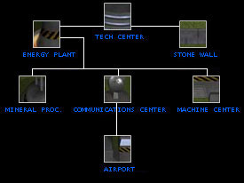

1. INTRODUCTION.
2. CONTROLS.
3. BUILDINGS.
4. UNITS.
5. ENERGY, RESOURCES AND MORE.
1. INTRODUCTION.
Lethal War Zone is a real-time strategy game. Research new technologies, build your base, control the resources and make an army to destroy your enemy.
back to index
2. CONTROLS.
MOUSE FUNCTIONS:
- Select units.
- Move units.
- Attack.
- Select a mouse action (produce, sell, repair, cancel).
- Produce units.
- Place buildings.
KEYS:
Space - Desselect units and restore standard mouse action.
P - Pause.
R - Repair.
DELETE - Sell.
C - Center to base.
Arrows or AWSD - Move Map
Shift - Center to selected unit.
Shift+1 - Assign selection to team 1
Shift+2 - Assign selection to team 1
...
Shift+9 - Assign selection to team 9
Shift+0 - Assign selection to team 0
1 - Select team 1
2 - Select team 2
...
9 - Select team 9
0 - Select team 0
back to index
3. BUILDINGS.
3.1. TECH CENTER.
This is your basic building. It is a requisite to make any other building. The tech center produces its own energy so you don't need any energy plant to make it. For each tech center your speed making buildings will increase.
3.2. ENERGY PLANT.
Having enough energy for all structures is so important. Each energy plant will give you additional 500 energy. You'll need at least one of this to access other structures.
3.3. MINERAL PROCESSING PLANT.
This building will increase your income per drill oil.
3.4. COMMUNICATIONS CENTER.
The communications center activates the radar and allows you to lead more units.
3.5. MACHINE CENTER.
It is the main requisite to produce towers, ground units and air units. The more machine centers you have the faster you'll make ground and air units.
3.6. AIRPORT.
Each air unit will require a free airport.
3.7. STONE WALL.
Useful to protect your base.
3.8. TOWERS.
Those buildings are your main defense against the enemy. Their requisites and stats are shown in the
UNITS SECTION.
3.9. BUILDING TREE AND REQUISITES.

| BUILDING | COST | HIT POINTS | ENERGY |
| TECH CENTER | 4000 | 6000 | 0 |
| ENERGY PLANT | 2000 | 4000 | 500 |
| MINERAL PROCESSING PLANT | 3000 | 5000 | -250 |
| COMMUNICATIONS CENTER | 3000 | 4000 | -350 |
| MACHINE CENTER | 3000 | 6000 | -250 |
| AIRPORT | 2000 | 6000 | -200 |
| STONE WALL | 30 | 1000 | 0 |
You can choose which unit you want to build clicking on its icon on the right side. To make a specific unit you'll need enough resources, tech level 1 or more on that unit and specific buildings.
The following table shows unit stats at tech level 1 and its requisites.
| UNIT | COST | HIT POINTS | DAMAGE | RANGE | SPEED | ENERGY | RELOAD TIME | RESEARCH COST | REQ1 | REQ2 | TYPE | ATT |
| CANNON | 1500 | 3000 | 150 | 250 | 0 | -100 | 20 | 1000 | X | | BUILDING | |
| HEAVY CANNON | 2500 | 5000 | 400 | 300 | 0 | -150 | 20 | 5000 | X | | BUILDING | |
| MACHINEGUN TOWER | 2000 | 4000 | 200 | 250 | 0 | -150 | 20 | 2500 | X | X | BUILDING | X |
| MISSILE TOWER | 2000 | 3000 | 200 | 300 | 0 | -150 | 25 | 2500 | X | X | BUILDING | X |
| DOUBLE MISSILE TOWER | 2500 | 4000 | 200X2 | 300 | 0 | -250 | 25 | 5000 | X | X | BUILDING | X |
| MISSILE LAUNCHER | 1250 | 1000 | 200 | 300 | 3 | 0 | 25 | 3000 | X | X | GROUD | X |
| LIGHT TANK | 1000 | 1000 | 100 | 150 | 4 | 0 | 20 | 1000 | X | | GROUD | |
| MEDIUM TANK | 1500 | 1500 | 150 | 200 | 3 | 0 | 20 | 2000 | X | | GROUD | |
| MEDIUM TANK II | 1500 | 1500 | 200 | 200 | 3 | 0 | 20 | 3000 | X | X | GROUD | X |
| HEAVY TANK | 2000 | 2000 | 250 | 200 | 3 | 0 | 20 | 4000 | X | | GROUD | |
| HEAVY TANK II | 2400 | 2400 | 300 | 250 | 4 | 0 | 20 | 5000 | X | | GROUD | |
| REPAIR VEHICLE | 1000 | 1000 | -50 | 75 | 4 | 0 | 20 | 1000 | X | | GROUD | |
| OUTPOST | 1000 | 1000 | 0 | 0 | 4 | 0 | 0 | 1000 | X | | GROUD | |
| WAR PLANE | 1000 | 1000 | 120X5 | 300 | 7 | 0 | 10 | 1000 | X | | AIR | |
| WAR PLANE II | 1500 | 1250 | 200X5 | 300 | 8 | 0 | 10 | 3000 | X | | AIR | |
| WAR PLANE III | 2500 | 1500 | 400X3 | 300 | 7 | 0 | 10 | 5000 | X | | AIR | |
* REQ1 = REQUIRES MACHINE CENTER
* REQ2 = REQUIRES COMMUNICATIONS CENTER
* ATT = CAN THIS UNIT ATTACK AIR UNITS?
UNITS WITH AIR ATTACK AND WAR PLANES CAN HIT OTHER UNITS OVER WALLS.
A unit has 2 types of levels:
- Tech level.
- Experience level.
For each tech level you improve a unit, it will have +10% base damage, +10% base hp (hit points). To improve a tech level of a unit you must spend some research points on it. A unit with tech level 0 can't be build.
For each experience level (half star) a unit has its damage and hp are increased +10%. The experience can only be taken while playing and any unit starts the game with 0 experience. The experience of a unit is shown in a white line under its life bar. The experience level of a unit is shown on a orange line above its life bar.
back to index
5. ENERGY, RESOURCES AND MORE.
Always try keeping your current energy above 0. If you need more energy than you have then:
- Communications won't work.
- Your building process will go at half speed.
- Your towers reload time will be 3 times higher.
Capturing any drill oil will increased your income which means your resources will incresase faster. Having mineral processing plants will increase your income per drill oil even more.
When you select to repair a building and you click on it, the building will be recovering 0.5% of its life until it has full hp. Each 0.5% of its life will cost you the amount of 2 resources.
The war planes are repaired automatically at the airport at same rate than buildings but at no cost at all and the ground units can only be repaired using the repair vehicle.
back to index